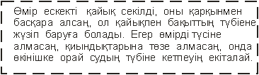
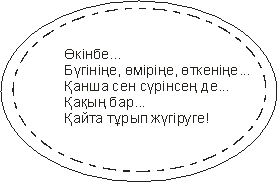
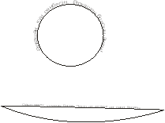

1. Фигуралық мәтін құру
2. Қарапайым мәтін құру
3. Мәтіндік блоктарды байланыстыру
CorelDraw мәтіннің екі түрін қолдануға мүмкіндік береді.
1. Artistic text – фигуралық мәтін
2. Paragraph text – қарапайым мәтін
Фигуралық мәтін объект деп есептеледі. Сондықтан оған контурдың және құюдың жалпы қасиеттерін және арнайы эффектерді қолдануға болады. Фигуралық мәтіннің формасын (Shape инструменті көмегімен) өзгертуге болады.
Қарапайым мәтін арнайы мәтіндік блокта орналасады және оған мәтіндік процессорларда қолданылатын параметрлерін (өрістер, абзацтық шегіністер, тасымалдау және т.б.) орнатуға болады. Қажет болған жағдайда фигуралық мәтінді қарапайым мәтінге және керісінше түрлендіруге болады. Ол үшін: Text > Convert to Paragraph (Artistic) text немесе Ctrl + F8 командаларын орындау керек.
Қарапайым және фигуралық мәтінді құру үшін: Text - инструментін қолдану керек.
Фигуралық мәтінді құру үїшін: жұмыс аймағының кез-келген жерінен шертіп, мәтінді енгізу керек.
Қарапайым мәтінді құру үшін: рамка сызып, мәтінді енгізу керек.
Мәтінді өңдеу үшін қолданылатын сұхбат терезе Ctrl + Shift+T пернелер комбинациясымен шақырылады. Мәтіннің параметрлерін толық баптау үшін F-батырмасы көмегімен Format text сұхбат терезесі шақырылады. Бұл терезенің 5 – бет парағы бар.
1. Character - cимволдар
2. Paragraph - абзацтар
3. Tabs - табуляция
4. Columns - колонкалар
5. Effects – маркерлердің түрі таңдалады. Сол маркердің көлемі, буквицаның түрі осы жерде таңдалады.
Мәтіндік блоктарды байланыстыру. Бұрынєы мәтіндік блокпен байланысқан жаңа блок құру үшін мәтіндік блоктың төменгі-ортанғы маркеріне шерту керек. Сонан соң мәтіндік блоктың рамкасын салу керек. Егер мәтін бірінші блокқа толық симасы маркер стрелка тјрізді болады. Екі блокты бір-бірімен байланыстыру үшін алдымен бірінші блоктың ортанғы – төменгі маркерлеріне шертіп, сонан соң екінші блокқа шерту керек. Байланыс көк түсті болады.
Сorel Draw графикалық редакторы мәтінді өңдеуге арналған құралдарды қамтиды. Оның мүмкіндіктері кәсіби баспа жүйесіндегі күшті мәтіндік редактордағыдый соншалықты қолайлы болмаса да көптеген тапсырмаларды шешуге жеткілікті.
Corel Draw –да екі түрлі мәтіндік объект жасауға болады: қарапайым мәтін (Paragraph ) және шығармашылық мәтін (Artistic).
Шығармашылық мәтін көбіне баспаны әдемі безендірілуі үшін қажет. Artistic объектісін жасау үшін құралды панеліндегі пиктограмманы басамыз. Мұнда мәтін шекарасы шектелмеген – экранның кез келген жерінде бір рет басып, мәтінді тере береміз. Басулы өлшеміне қарай шектері автоматты түрде кеңейе береді. Көп мөлшерде мәтінді енгізу үшін Paragraph форматы қолданылады. Объект жасауда қағаз бетінде керекті аймақты, яғни мәтін орналасатын жерді басамыз. Шектеріне дейін толып қалғанша кейін ол экранда көрінбей қалады. Сондықтан шектерін кеңейту керек немесе сол бөлімі басқа Paragraph объектісін апаруға болады.[4]
Мәтін объектісіне Effects-ті таңдап, әртүрлі эффекттер жасауға болады: масштабтау, созу, ығыстыру, айналдыру. WYSOWYG принципі бойынша жұмыс істейтін кез келген басқа да бағдарламалар сияқты Corel Draw мәтінніѕ барлық өзгерулерін экранда көрсетеді. Редакторда орнатылған Windows True Type Post Script тәрізді әріптерді толық қолдануға болады.
Corel Draw мәтініде орындалатын негізгі операцияларды қарастырайық.
Мәтінді форматтау үшін Text менюі қолданылады. Төменде оның пункттері келтірілген[5]
Text Roll -Up
Мәтіннің негізгі параметрлері: қолданылып отырған каріп оның өлшемі қатар теңестірілуі. Бұл менюден арнайы параметрді орнатуға арналған болса менюлерге өтуге болады.
Character
Бұл пунктті талдау кезінде қолданушы карпті өлшемін, белгілер стилін, белгілер арасындағы арақашықтық, сөздер, қатарлар арасындаєы арақашықтықты, қатарды теңестіруін іске асыра алатындай меню шығады. Сызықша бір өлшемді немесе екі-жіңшке және жуан бола алады.
Paragraph
Бұл менюде мәтін параграфының параметрін өзгертуге болады: қатарлар арасындағы сөздер және белгілер арасындағы қашықтық, параграф шектері, сол жақтан немесе оң жақтан шегіністер, табулияция позициясы. Арнайы көркем карптерден белгілер қоюға болады.
Frame
Тек Paragraph объектісі үшін. Мјтінді газета форматында яғни бағаналармен шығарады. Бағана саны 1-ден 8-ге дейін. Әрбір колонканың енінің өлшемін беруге болады. Мәтінді енгізгенде және объектінің төменгі шегіне жеткенде ол автоматты түрде келесі бағанаға автоматты түрде көшеді.
Fit Text To Path
Corel Draw басқа қарапайым мәтіндік процессорларда ерекшелеп тұратын айрықша құралы. Берілген команда мәтінді қандайда да бір объектілер біріктіреді. Осылайша берілген объектіге жанасады. Corel Draw мәтінді әртїрлі түрде орналастыруды қамтиды. Мысал үшін периметрі бойынша шарбақша құру.
Align To Baseline – мәтінді базалық сызық бойынша теңестіру
Straighten Text – мәтінді базалық сызық бойынша теңестіріп, оған барлық символдар қатарын қолдану.
Type Assist - мәтінге арналған арнайы сервистік белгілеулер
Spel Checker- орфография тексеру. Тек бекітілген объектті тексеріп қана қоймайды, мәтінге ие барлық құжатты тексереді.
Thesaurus - әрбір сөздік синониммен ауыстыру мүмкіндігі
Find – мәтінді табу
Replace – мәтінді ауыстыру
Edit Text – аса көрнекі емес, бірақ көп жағдайда мәтінді енгізу үшін қолайлы. Енгізу терезесі шығады сонда өзгертулер енгізіледі. Мәтінге созу, сығу, айналдыру, орын ауыстыру сияқты қарапайым мәтінге қолданылатын барлық өзгертулер жасауға болады.
Назар аударуды қажет ететін үлкен көлемді объекттермен Corel Draw –да жұмыс істеудің қолайсыздығы. Windows- қа арналған күшті мәтіндік процессорлар және баспа жүйесімен қолданушы Corel Draw интерфейсінің қолайсыздығын бірден байқайды. Мәтіннен және нысанмен жұмысқа араналған курсордың түрін жиі ауыстыруға тура келеді және мәтін стилін бірнеше рет ґзгерту керек болады.Параграфтармен жасалєан жўмыс кїрделі. Кґптеген пайдалы өзгертулерге арналған қажетті функциялар жоқ. Бір жағынан қарайтын болсақ бұл бағдарлама қандай мақсатта арналып жасалғанын есепке алатын болсақ мәтінмен жұмыс істеуге арналған функциялар жақсы ұйымдастырылған дейтін болар едік.
Өлшеулерді өзгерту: биіктігі, ені, пропорциональды.
Өлшемдері шектелмеген . Егер бұрыштағы шаршыны алсақ онда ұзындығы және биіктігі пропорциональды түрде өзгереді.
Бұл операцияларды барлығын визуалды түрде емес, сонымен қатар сандар енгізіп жасауға болады, егер Transform Roll-Up менюін қолдансақ, ол Effects менюінде мұнда меню шығады және орын ауыстыру түймесі, айналдару, өлшемін өзгерту, жылжыту түймелері бар. Қажетті ұзындық және бұрыштар мәнін қолмен қоюға болады. Команданың орындалуы үшін Apply – ді басамыз.
Шағылысу (Mirror)
Бұл функция мәтінді солға, оѕға немесе жоғарыдан төменге айналдыруға мїмкіндік береді.



Бақылау сұрақтары:
1. Фигуралық мәтін және Қарапайым мәтін дегеніміз не?
2. Гарнитура, Кегл, Сызба жазу дегеніміз не?
3. Фигуралық тексті контейнер ішіне қалай жазуға болады?
4. Қарапайым мәтінді басқарудың қосымша элементтері қай терезеде шығады?
5. Байланысқан мәтін торларын қалай құруға болады?